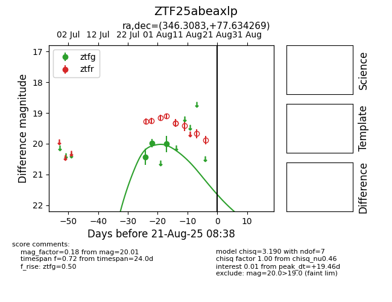

Target ZTF25abeaxlp at 2025-08-21 08:38, see:
FINK: fink-portal.org/ZTF25abeaxlp
Lasair: lasair-ztf.lsst.ac.uk/objects/ZTF25abeaxlp
ALeRCE: alerce.online/object/ZTF25abeaxlp
alt names
ZTF25abeaxlp (ztf,alerce)
coordinates:
equatorial (ra, dec) = (346.3083,+77.63427)
galactic (l, b) = (117.2180,+15.95689)
photometry
last ztfg=20.01
3 ztfg detections
